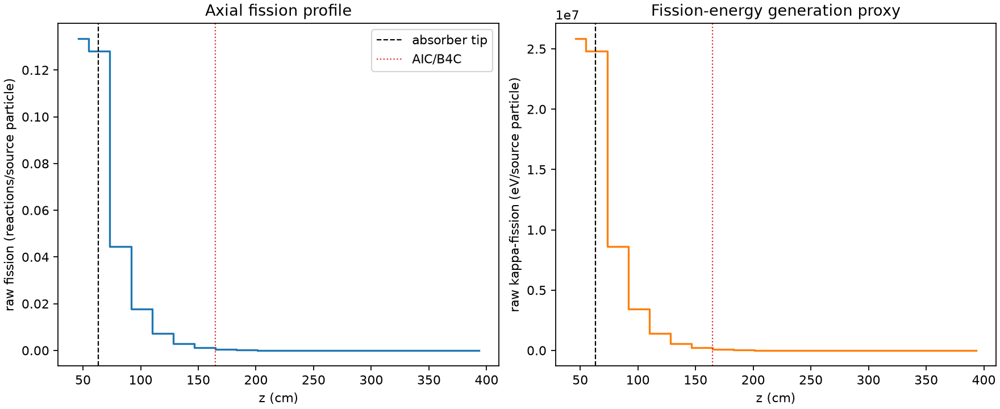
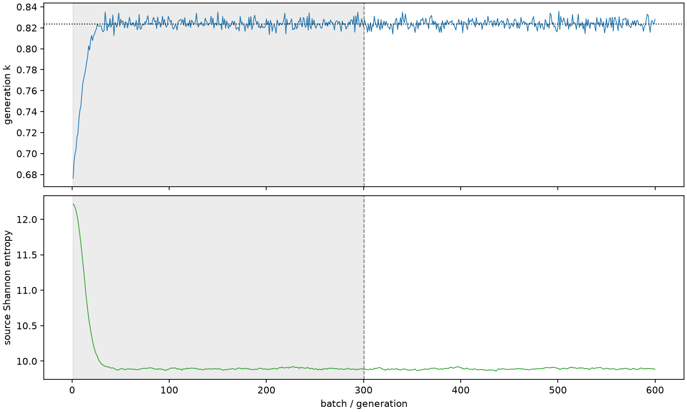

| field | value |
|---|---|
| experiment | V2-STAGE_32_OGRENCI_02-0007 |
| k | 0.8236896518822703 |
| MC standard error | 0.00018472598678431372 |
| seconds | 1124.3583983839999 |
| acceptance | not_assessed |
| convergence | review_required |
Completed is output integrity only; physical and statistical review required. Zero tallies do not prove zero production or zero uncertainty.
| diagnostic | value |
|---|---|
| geometric fuel voxels | 5280 |
| zero fission tally voxels | 1699 |
| low signal fuel voxels | 2782 |
| low signal fission share | 0.00012647583248743196 |
| low signal kappa share | 0.00012652544499382916 |
| important fission share | 0.9500272659636588 |
| previous filter included | 2498 |
| duration estimate s | 1562.5173488400023 |
| actual minus estimate s | -438.15895045600246 |
| fission relative MC error | statistics |
|---|---|
| all_geometric_fuel | {"voxels": 5280, "positive_mean_voxels": 3581, "zero_mean_voxels": 1699, "undefined_relative_error_voxels": 1699, "median": 0.04381155551458604, "p95": 0.9158213880303065, "maximum": 1.0000000000000002} |
| low_signal | {"voxels": 2782, "positive_mean_voxels": 1083, "zero_mean_voxels": 1699, "undefined_relative_error_voxels": 1699, "median": 0.49017647715608986, "p95": 1.0, "maximum": 1.0000000000000002} |
| important_95pct | {"voxels": 970, "positive_mean_voxels": 970, "zero_mean_voxels": 0, "undefined_relative_error_voxels": 0, "median": 0.004454009308286093, "p95": 0.010889006451263408, "maximum": 0.012016761471109224} |
| outside_previous_filter | {"voxels": 2782, "positive_mean_voxels": 1083, "zero_mean_voxels": 1699, "undefined_relative_error_voxels": 1699, "median": 0.49017647715608986, "p95": 1.0, "maximum": 1.0000000000000002} |
| kappa_fission relative MC error | statistics |
|---|---|
| all_geometric_fuel | {"voxels": 5280, "positive_mean_voxels": 3581, "zero_mean_voxels": 1699, "undefined_relative_error_voxels": 1699, "median": 0.043729514398324905, "p95": 0.91490180492791, "maximum": 1.0000000000000002} |
| low_signal | {"voxels": 2782, "positive_mean_voxels": 1083, "zero_mean_voxels": 1699, "undefined_relative_error_voxels": 1699, "median": 0.48862576945770053, "p95": 1.0, "maximum": 1.0000000000000002} |
| important_95pct | {"voxels": 970, "positive_mean_voxels": 970, "zero_mean_voxels": 0, "undefined_relative_error_voxels": 0, "median": 0.004447049979899091, "p95": 0.010869813140046465, "maximum": 0.011999917607391709} |
| outside_previous_filter | {"voxels": 2782, "positive_mean_voxels": 1083, "zero_mean_voxels": 1699, "undefined_relative_error_voxels": 1699, "median": 0.48862576945770053, "p95": 1.0, "maximum": 1.0000000000000002} |
| axial bin | fission share | kappa-fission share |
|---|---|---|
| 1 | 0.3975387933813887 | 0.39749010102613425 |
| 2 | 0.3816325490443577 | 0.38162724691604766 |
| 3 | 0.1326027893164087 | 0.1326345669733462 |
| 4 | 0.05297814110454748 | 0.052991448426098396 |
| 5 | 0.021430927962981548 | 0.02143630051847972 |
| 6 | 0.008684130245039182 | 0.00868623964493015 |
| 7 | 0.0034160036334590273 | 0.003416878172661599 |
| 8 | 0.0011561247210669632 | 0.0011564777580394215 |
| 9 | 0.0003753869456313689 | 0.0003755129798116546 |
| 10 | 0.00012584591700697038 | 0.00012589241989749758 |
| 11 | 3.763408909174504e-05 | 3.765284116170319e-05 |
| 12 | 1.669184145645739e-05 | 1.6700624913189313e-05 |
| 13 | 4.2371109095489164e-06 | 4.237047216345107e-06 |
| 14 | 7.390640222899081e-07 | 7.389776396021925e-07 |
| 15 | 5.622632170242339e-09 | 5.673622569989704e-09 |
| 16 | 0.0 | 0.0 |
| 17 | 0.0 | 0.0 |
| 18 | 0.0 | 0.0 |
| 19 | 0.0 | 0.0 |
| 20 | 0.0 | 0.0 |
Histories include the inactive-to-active transition at batch 300. kappa-fission approximates fission energy production, not total heat deposition.

